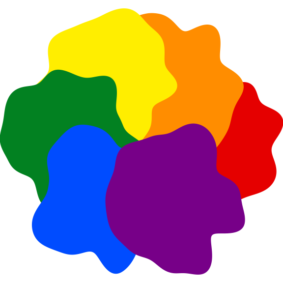
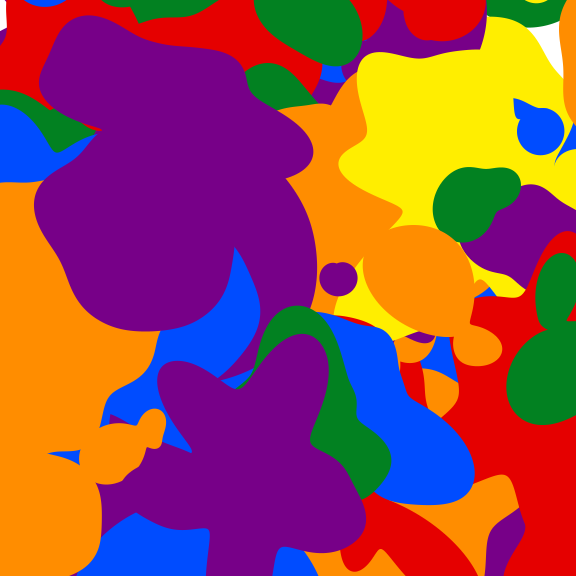
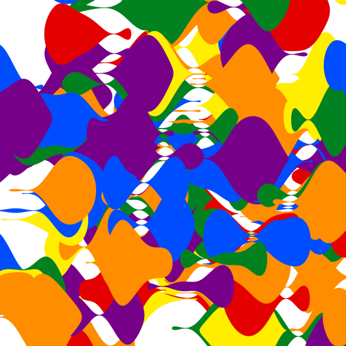
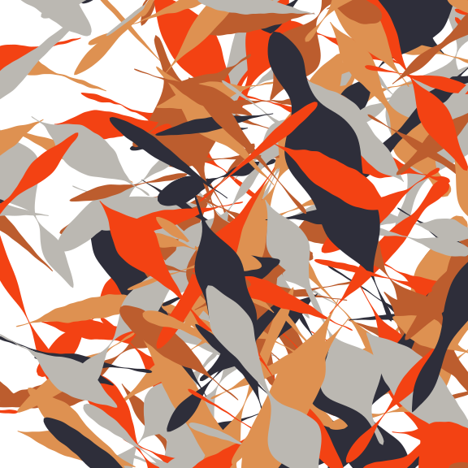

sketchpad is a lightweight, p5.js-inspired drawing system for generative art, built on S7 classes and grid graphics. It provides a small set of drawable shapes (circle(), blob(), ribbon(), twist()) that can be composed into a sketch() and rendered with draw().
Installation
You can install the development version of sketchpad from GitHub with:
# install.packages("pak")
pak::pak("djnavarro/sketchpad")A ring of blobs
A blob() is a circle whose radius is perturbed by simplex noise. Here six blobs are arranged around a ring, one per colour:
library(sketchpad)
#>
#> Attaching package: 'sketchpad'
#> The following object is masked from 'package:graphics':
#>
#> points
values <- tibble::tibble(
x = cos(seq(0, pi * 5 / 3, length.out = 6)),
y = sin(seq(0, pi * 5 / 3, length.out = 6)),
n = 500L,
fill = c("#e50000", "#ff8d00", "#ffee00", "#028121", "#004cff", "#770088"),
color = fill
)
blobs <- purrr::pmap(values, blob)
blobs |> sketch() |> draw()
Scattered blobs
Randomising the position, radius, and noise range of many blobs gives a more organic composition:
set.seed(3)
palette <- c("#e50000", "#ff8d00", "#ffee00", "#028121", "#004cff", "#770088")
n_blobs <- 200L
values <- tibble::tibble(
x = rnorm(n_blobs, sd = 1.5),
y = rnorm(n_blobs, sd = 1.5),
n = 500L,
fill = sample(palette, n_blobs, replace = TRUE),
radius = runif(n_blobs),
range = runif(n_blobs, min = 0, max = .5),
color = fill
)
blobs <- purrr::pmap(values, blob)
blobs |> sketch() |> draw(xlim = c(-2, 2), ylim = c(-2, 2))
Ribbons
A ribbon() is a tapered, noise-displaced band drawn between two points:
set.seed(3)
palette <- c("#e50000", "#ff8d00", "#ffee00", "#028121", "#004cff", "#770088")
n_ribbons <- 200L
values <- tibble::tibble(
x = rnorm(n_ribbons, sd = 1.5),
y = rnorm(n_ribbons, sd = 1.5),
xend = x + 1,
yend = y,
width = 1,
n = 500L,
fill = sample(palette, n_ribbons, replace = TRUE),
color = fill
)
ribbons <- purrr::pmap(values, ribbon)
ribbons |> sketch() |> draw(xlim = c(-2, 2), ylim = c(-2, 2))
Twists
A twist() is like a ribbon, but follows a Brownian bridge instead of a straight line, giving it a wandering, twisted appearance:
set.seed(1)
palette <- c("#de9151", "#f34213", "#2e2e3a", "#bc5d2e", "#bbb8b2")
n_twists <- 400L
values <- tibble::tibble(
x = rnorm(n_twists, sd = 2),
y = rnorm(n_twists, sd = 2),
xend = x + 1,
yend = y + rnorm(n_twists, sd = 1),
width = runif(n_twists, min = .1, max = .3),
smooth = 6L,
n = 100L,
fill = sample(palette, n_twists, replace = TRUE),
color = fill
)
twists <- purrr::pmap(values, twist)
twists |> sketch() |> draw(xlim = c(-2, 2), ylim = c(-2, 2))